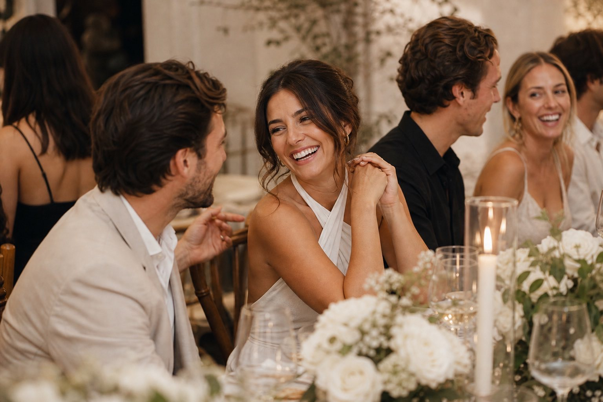

Wardrobe
What to wear for bright, editorial photos
Simple palettes, textures that photograph well, and a checklist for choosing pieces you already love.
Read moreA calm, guided experience built around flattering light and easy prompts — images that feel cinematic, clean, and unmistakably you.
Quiet confidence on a fast day. We capture honest moments and elevated portraits — with timelines that protect the experience.
Coverage that feels cinematic and effortless. We capture the room, the people, and the small details that make the night yours.
Launch-ready images built for web, press, and paid. We plan for consistency across scenes so your brand looks intentional everywhere.
Elevated still life and product detail images with studio-level polish — built for ecommerce, lookbooks, and modern ad creative.
Simple prompts, beautiful light, and space for real connection — photographed with warmth and a refined, print-first finish.
We work with minimal gear on set and maximal attention to light, pacing, and comfort — so the images feel effortless and elevated.
We plan around light, movement, and story — then keep the session day simple. Direction is gentle and specific, so you never feel “posed.”
Expect clear communication, timeline-friendly pacing, and an easy gallery experience. We help you choose favorites and prep images for print and web.
Wardrobe
Simple palettes, textures that photograph well, and a checklist for choosing pieces you already love.
Read more
Locations
How we choose locations that keep your set calm, private, and beautifully lit at the right time of day.
Explore
Session Day
Pacing tips for portraits, events, and weddings — so you get the photos without losing the day.
See the guide
Resolution, crops, paper finishes, and how we deliver files that stay gorgeous off-screen.
LearnMNY Photo — NYC + travel
Premium, bright editorial images with calm direction and a print‑first finish. We build galleries that feel like a story — not a photoshoot.
MNY Photo blends documentary observation with refined portrait direction. We plan around light, movement, and story — then keep the session day simple so you can be present.
A curated set of story-driven galleries — filter by session type.





A studio menu designed for real life: calm pacing, bright light, and galleries that feel intentional.
Bright editorial portraits with calm direction and effortless posing prompts.
Learn moreRefined documentary coverage with portraits that feel cinematic, not staged.
Learn moreEnergy, detail, and story — photographed with flattering light and clean color.
Learn moreCohesive sets for web, press, and paid — built around your voice and palette.
Learn moreCrisp, tactile still life with clean whites and warm highlights for premium goods.
Learn moreNatural connection with a bright, editorial finish — home-ready and timeless.
Learn moreThree recent sets — each with a different pace, light, and intention.
Featured story
Three looks, one location, and a shot flow designed for web + press. Bright whites, warm skin, and clean composition.
View workBright whites, warm highlights, and true skin tones — a clean finish that still feels like you.
Realistic words from fictional clients — the kind we’re proud to earn.
“I expected to feel awkward — I didn’t, even once. The direction was calm and specific, and the images look like they belong in a magazine.”
6+
session styles
48h
sneak peek option
NYC
available for travel
ready delivery
Tell us what you’re making — we’ll recommend a calm plan and the right kind of coverage, with a bright, cinematic finish.